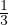

Koonus
|
|
 | Koonus |
|
|
| |
Koonuseks nimetatakse pöördkeha, mis tekib täisnurkse kolmnurga pöörlemisel
ümber kaateti.
Koonuse teljeks nimetatakse kaatetit, mille ümber pööreldes moodustub
koonus.
Koonuse moodustajaks nimetatakse pöörleva kolmnurga hüpotenuusi.
Koonuse telglõikeks nimetatakse koonuse telge läbiva tasandi ja koonuse lõiget.
Seega on koonuse telglõikeks kolmnurk.
Koonuse ristlõikeks nimetatakse koonuse lõiget tema teljega ristuva tasandiga.
Seega on koonuse ristlõikeks ring.
Koonuse omadused:
- põhja pindala Sp = πr2
- külgpindala Sk = πrm, kus m on moodustaja
- täispindala S = Sk + Sp = πr(r + m)
- ruumala V = πr2h